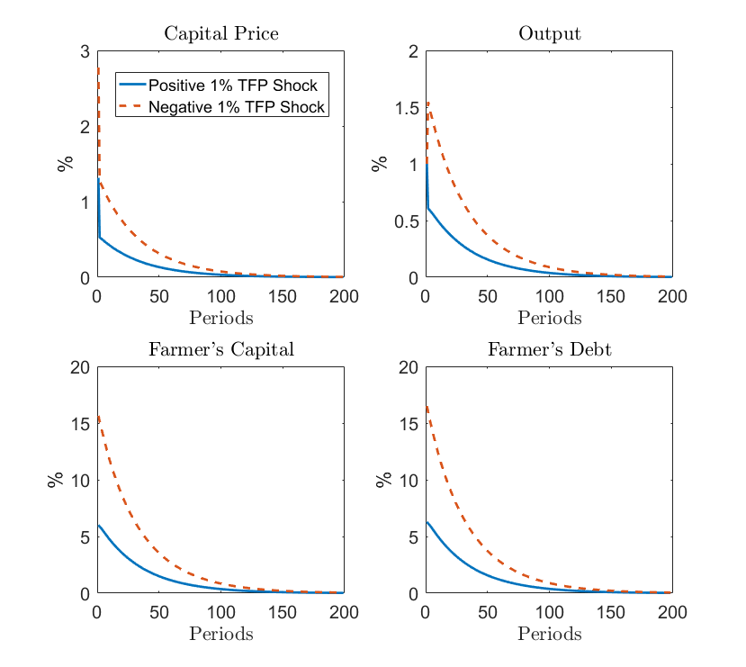

Kiyotaki and Moore (1997): Credit Cycles¶
In their seminal 1997 paper, Kiyotaki and Moore put forth a model of credit cycles in which movements in asset prices interacts with the real side of the economy and produce amplified and persistent effects of shocks to the economy.
Their original model is relatively simmple with risk-neutral agents and one-time unanciptated MIT shocks. Peter Frank Paz, a Ph.D. candidate from New York University proposes a more modern extension of the model with risk-averse agents and recurrent aggregate shocks. The model fits squarely in GDSGE framework and Peter kindly contributed his gmod file below.
As in Kiyotaki and Moore (1997) the economy consists of two production sectors, farming and gathering, with population of each sector normalized to one. The farmers are more productive, but are less patient than the gatherers and thus they tend to borrow from the gatherers in equilibrium.
A farmer solves
subject to the budget constraint:
in which her resource is from production
the value of land holding \(q_{t}k_{t-1}\), and bond holding \(b_{t-1}\). The aggregate TFP shock \(A_{t}\) follows a Markov process. She allocates her resource among consumption \(x_{t}\), as well as land and bond holding into the next period. As in Kiyotaki and Moore (1997), here portion \(c\) of the output is non-tradable and has to be consumed, i.e.,
and only the remaining portion \(a\) is tradable. She is also subject to the following collateral constraint:
in which \(\underline{q}_{t+1}\) is the lowest possible land price in the next period. In Kiyotaki and Moore (1997) \(\theta\) is set at \(1\) but we allow \(\theta\) to be smaller than \(1\) in this extension so that the collateral constraint binds with positive probability in the ergodic distribution of the model dynamics.
Similarly, a gatherer solves
subject to the budget constraint,
in which her production function is concave,
We assume the gatherers’ productivity \(\underline{A}_{t}\) is inferior, and equals to a fixed proportion of \(A_{t}\), i.e., \(\underline{A}_{t}=\delta A_{t}\) with \(\delta<1\).
Let us denote the multipliers on the farmers’ budget constraint (15) as \(\beta^{t}\lambda_{t}\), and on the tradability constraint (16) as \(\beta^{t}\eta_{t}\), and on the collateral constraint (17) as \(\beta^{t}\mu_{t}\). Because the farmers and gatherers’ optimization problems are globall concave maximization problems, the following first order conditions and complementary-slackness conditions are neccessary and sufficient for optimality:
The total land supply is fixed at \(\overline{K}\), and the market clearing conditions are
We define recursive equilibrium over two endogenous state variables. The first-one is the farmers’ land-holding \(k_{t-1}\). The second one is the farmers’ financial wealth share defined as
We use \(\left(k_{t-1},\omega_{t}\right)\) as the endogenous state variables, instead of \(\left(k_{t-1},b_{t-1}\right)\) in order to avoid multiple equilibria problems. (The multiple equilibria problem in a similar setting is studied previously in Cao, Luo and Nie (2019).)
The gmod File¶
1 2 3 4 5 6 7 8 9 10 11 12 13 14 15 16 17 18 19 20 21 22 23 24 25 26 27 28 29 30 31 32 33 34 35 36 37 38 39 40 41 42 43 44 45 46 47 48 49 50 51 52 53 54 55 56 57 58 59 60 61 62 63 64 65 66 67 68 69 70 71 72 73 74 75 76 77 78 79 80 81 82 83 84 85 86 87 88 89 90 91 92 93 94 95 96 97 98 99 100 101 102 103 104 105 106 107 108 109 110 111 112 113 114 115 116 117 118 119 120 121 122 123 124 125 126 127 128 129 130 131 132 133 134 135 136 137 138 139 140 141 142 143 144 145 146 147 148 149 150 151 152 153 154 155 156 157 158 159 160 161 162 163 164 165 166 167 168 169 170 171 172 173 174 175 176 177 178 179 180 181 182 183 184 185 186 187 188 189 190 191 192 193 194 195 196 197 198 199 200 201 202 203 204 205 206 207 208 209 210 211 212 213 214 215 216 217 218 219 220 221 222 223 | %========================================================================================
% PARAMETERS
%========================================================================================
parameters a c alower sigma betaF betaG alpha Kbar theta;
a = 0.7; % tradable productivity of farmer
c = 0.3; % nontradable productivity of farmer
alower=0.9; % tradable productivity of gatherer
% preferences
sigma=1; % risk aversion coefficient
betaF=0.95; % discount factor of farmer
betaG=0.98; % discount factor of gatherer
% technology
alpha=0.7; % coefficient of gatherer's production
Kbar=1; % fixed capital stock
% credit
theta=0.9;
SaveFreq = 200;
PrintFreq = 50;
INTERP_ORDER = 2;
EXTRAP_ORDER = 2;
SIMU_RESOLVE=0;
SIMU_INTERP=1; % Use interpolation for fast simulate
IterSaveAll = 0;
%========================================================================================
% ENDOGENOUS STATES
%========================================================================================
var_state kF omega;
kFPts=41;
kFMin=0.02;
kFMax=0.95;
drift_K = 0.01;
kF=linspace(kFMin,kFMax,kFPts);
omegaPts=40;
omegaMin=0;
omegaMax=0.2;
omega=linspace(omegaMin,omegaMax,omegaPts);
%========================================================================================
% SHOCKS
%========================================================================================
var_shock A;
shock_num=3;
A = [0.99 1 1.01];
shock_trans = ones(shock_num,shock_num)/shock_num;
[KMesh,omegaMesh] = ndgrid(kF,omega);
%========================================================================================
% STATE TRANSITION FUNCTION: INTERPOLATION Variables subset of Endogenous variables
%========================================================================================
var_policy_init nxF xG eta kFpol R q nbFpol muF;
inbound_init nxF 0 10;
inbound_init xG 0 10;
inbound_init eta 0 1;
inbound_init kFpol 0 Kbar;
inbound_init R 0 10;
inbound_init q 0 10;
inbound_init nbFpol 0 10; % Transformaion nbFpol = bFpol + theta*q*kFpol
inbound_init muF 0 1;
var_aux_init loglambdaF loglambdaG logaux;
% This corresponds to the T-1 problem
model_init;
kG = Kbar-kF; % market clearing for capital state
% Backout bFpol
kGpol = Kbar-kFpol; % market clearing for capital policy
bFpol = nbFpol;
bGpol = -bFpol; % market clearing
% Backout xG and marginal utility
Y = A*(a+c)*kF + alower*A*kG^alpha; % aggregate output
xF = nxF + c*A*kF; % consumption of farmer
lambdaF = xF^(-sigma)/(1-eta); %multiplier for nontradable is eta*lambda
lambdaG = xG^(-sigma);
loglambdaF = log(lambdaF);
loglambdaG = log(lambdaG);
aux = (q+A*(a+c)-c*A*eta)*lambdaF;
logaux = log(aux);
% In the last period, people consume everything, and qT=0
xF_next = (a+c)*kFpol + bFpol;
xG_next = alower*kGpol^alpha + bGpol;
lambdaF_next = xF_next^(-sigma);
lambdaG_next = xG_next^(-sigma);
foc_bondG = 1 - R*betaG*lambdaG_next / lambdaG;
foc_kG = q - betaG*lambdaG_next*alower*alpha*kGpol^(alpha-1)/lambdaG;
foc_bondF = 1 - R*betaF*lambdaF_next / lambdaF - muF;
foc_kF = q - betaF*(a+c)*lambdaF_next/lambdaF;
slack_bF = muF*nbFpol;
slack_xF = eta*nxF;
budgetF = q*kFpol +bFpol/R + xF - A*(a+c)*kF - omega*q*Kbar;
MC_Y = Y - xF - xG;
equations;
foc_bondG;
foc_kG;
foc_bondF;
foc_kF;
slack_bF;
slack_xF;
budgetF;
MC_Y;
end;
end;
var_interp loglambdaF_interp loglambdaG_interp logaux_interp q_interp;
%Time iteration update: update of the transition function after a time iterarion step need to be specified.
loglambdaF_interp = loglambdaF;
loglambdaG_interp = loglambdaG;
logaux_interp = logaux;
q_interp = q;
initial loglambdaF_interp loglambdaF;
initial loglambdaG_interp loglambdaG;
initial logaux_interp logaux;
initial q_interp q;
%========================================================================================
% Endogenous variables or policy variables: name, and bounds
%========================================================================================
var_policy nxF xG eta kFpol R q nbFpol muF omega_next[3];
inbound nxF 0 2;
inbound xG 0 2;
inbound eta 0 1;
inbound kFpol 0 Kbar;
inbound R 0 1.5 adaptive(1.5);
inbound q 0 10 adaptive(1.5);
inbound nbFpol 0 10 adaptive(1.5); % Transformaion nbFpol = bFpol + theta*q*kFpol
inbound muF 0 1;
inbound omega_next 0 1;
%====================================================
% Other equilibrium variables
%====================================================
var_aux xF loglambdaF loglambdaG logaux bFpol Y bF; %qlow_next
var_output xF xG Y q R eta muF kFpol omega_next bF;
%====================================================
% MODEL
%====================================================
model;
kG = Kbar-kF; % market clearing for capital state
Y = A*(a+c)*kF + alower*A*kG^alpha; % aggregate output
bF = q*omega*Kbar - q*kF;
[loglambdaF_next', loglambdaG_next', logaux_next', q_next']=GDSGE_INTERP_VEC'(kFpol,omega_next');
lambdaF_next' = exp(loglambdaF_next');
lambdaG_next' = exp(loglambdaG_next');
aux_next' = exp(logaux_next');
% Backout bFpol
kGpol = Kbar-kFpol; % market clearing for capital policy
quse = GDSGE_MIN{q_next'};
bFpol = nbFpol - theta*quse*kFpol;
bGpol = -bFpol; % market clearing
% Backout xG and marginal utility
xF = nxF + c*A*kF; % consumption of farmer
lambdaF = xF^(-sigma)/(1-eta);
lambdaG = xG^(-sigma);
loglambdaF = log(lambdaF);
loglambdaG = log(lambdaG);
aux = (q+A*(a+c)-c*A*eta)*lambdaF;
logaux = log(aux);
mpk_nextplusq'= (alower*A')*alpha*kGpol^(alpha-1)+q_next';
%Aplusqnext' = A'*(a+c)+q_next';
%====================================================
% calculate the residual equations: 8 equation (= 7+ 1 consistency) and 8 unknown
%====================================================
foc_bondG = 1 - R*(betaG*GDSGE_EXPECT{lambdaG_next'}) / lambdaG;
foc_kG = q - betaG*GDSGE_EXPECT{lambdaG_next'*mpk_nextplusq'}/lambdaG;
foc_bondF = 1 - R*(betaF*GDSGE_EXPECT{lambdaF_next'}) / lambdaF - muF;
foc_kF = q - betaF*GDSGE_EXPECT{aux_next'} /lambdaF - theta*quse*muF/R;
slack_bF = muF*nbFpol;
slack_xF = eta*nxF;
budgetF = q*kFpol +bFpol/R + xF - A*(a+c)*kF - omega*q*Kbar;
MC_Y = Y - xG - xF;
consis_omega_next' = (q_next'*kFpol + bFpol) - q_next'*omega_next'*Kbar;
equations;
foc_bondG;
foc_kG;
foc_bondF;
foc_kF;
slack_bF;
slack_xF;
budgetF;
MC_Y;
consis_omega_next';
end;
end;
simulate;
num_periods = 1000;
num_samples = 100;
initial kF 0.05;%Kbar - (a/(alower*betaG*alpha))^(1/(alpha-1));
initial omega 0.01;
initial shock 2;
var_simu xF xG Y q R eta muF bF; % some variables
kF'=kFpol;
omega' = omega_next';
end;
|
In the numerical exercise, We choose the shock process of TFP \(A_{t}\) to be I.I.D., and \(A_{t}\in\left\{ 0.99,1,1.01\right\}\) with probability \(1/3\) for each possible value. In the ergodic distribution, the probabilities for binding collateral constraint conditional on the three values of \(A_{t}\) are 92%, 80% and 77% respectively. Thus the collateral constraint is more likely to be binding when \(A_{t}\) is low.
The IRFs after positive and negative 1 percent TFP shocks (flipped for negative shocks) are plotted below by averaging the conditional responses over the ergodic distribution (using the method and MATLAB code from Guerrieri et al. (2020): Negative Supply Shocks That Cause Demand Shortages example).
{kind=link}
Although the TFP shocks are symmetric and temporary, the IRFs show that their effects are asymmetric and persistent thanks to market incompleteness and the collateral constraint (17). In a more realistically calibrated model, Cao and Nie (2017) study the importance of market incompleteness and collateral constraints in producing these effects. They found that market incompleteness is relatively more important than collateral constraints.